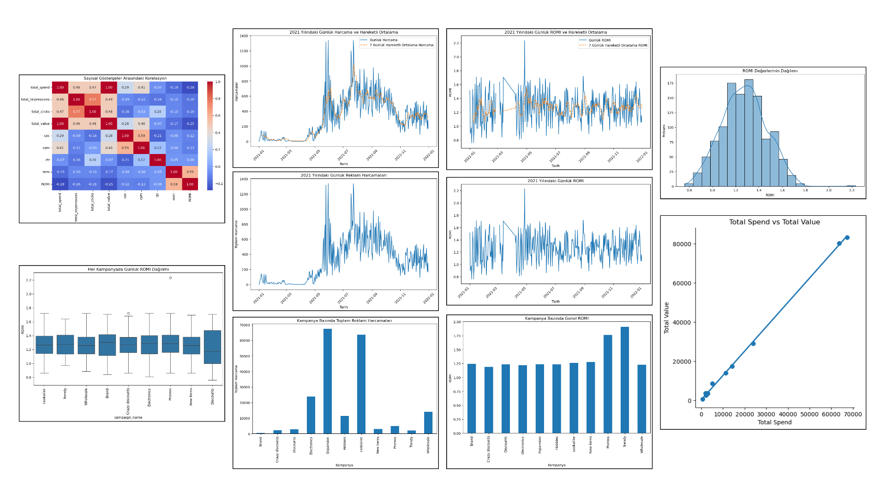

Project 6 – Facebook Ad ROMI Analysis (Python)
Overview
This analysis was built in Python to reveal the profitability of Facebook ad campaigns. By visualising daily spend versus revenue and computing ROMI, marketers can steer their budgets with confidence.
What does this analysis deliver?
- Transparent daily charts of spend and revenue for every campaign.
- ROMI (Return on Marketing Investment) calculated for objective profitability tracking.
- 7-day rolling averages smooth volatility and make trends obvious.
- Time-series signals highlight surges or drops early.
- Clear guidance on where to scale or cut ad budgets.
Data-Driven Recommendations
- Pause or retarget campaigns with persistently low ROMI.
- Re-launch retargeting during periods that historically spike.
- Audit creatives where 7-day averages dive sharply.
- Cap spend for high-cost / low-return campaigns.
- Clone targeting & creatives from top-performing ads.
- Drill into device, audience and day-of-week splits for anomalies.
Technical Details
Stack: Python · Pandas · Matplotlib | Source CSV: Facebook Ads (campaign, date, spend, revenue)
Key Components:
- Daily Spend & Revenue Lines by campaign.
- ROMI metric computed as (revenue – spend) / spend.
- 7-Day Rolling Average to calm noise.
- Total Spend vs ROMI bar ranking weak campaigns.
- Campaign Summary Table with
total_spend,total_revenue,avg_romi.
Tools:
Python